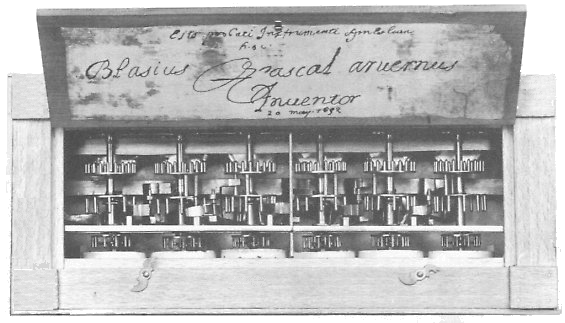
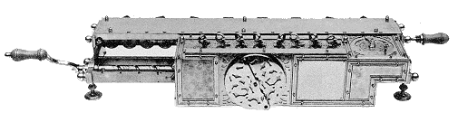
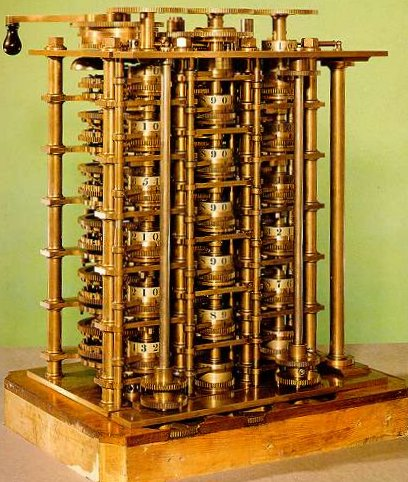
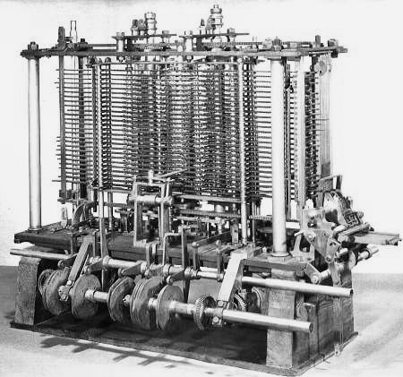

|
|
 |
|
| Marco Montanari | |
Il mito della "macchina pensnte" inizia a interessare i filosofi già dal '600. Nel 1642 Blaise Pascal costruì la prima macchina calcolatrice digitale per la addizione e la sottrazione: la pascalina. Questa macchina era basata
Anche altri studiosi del tempo, come Leibnitz e Babbage si diedero alla costruzione di macchinari per il calcolo. Disse Leibnitz "è vergognoso che degli uomini eccellenti debbano perdere delle ore come schiavi in un lavoro di calcolo che si potrebbe delegare tranquillamente a qualsiasi altro se si usassero delle macchine"
Babbage, invece, si diede alla costruzione di una "macchina
delle differenze" Questa poteva calcolare con molta precisione
il valore numerico di polinomi.
Altra macchina di Babbage fu la "macchina analtica",
che poteva risolvere qualunque problema aritmetico di cui potesse essere
fatto un algoritmo.




- Blaise Pascal
- Blaise Pascal nacque a Clermont nel 1623 e morì a Parigi nel
1662, a soli 39 anni. Studioso di problemi fisici e matematici, non
ancora sedicenne pubblicò il "Saggio sulle coniche"
e condusse in seguito studi sul calcolo delle probabilità e degli
indivisibili, inventando tra l'altro la prima macchina calcolatrice
ed il torchio idraulico. Nel 1646 entrò in contatto con il Giansenismo
(movimento religioso perseguitato da re Luigi XIV e condannato dalla
Chiesa cattolica) ed ebbe così inizio il suo interesse per la
filosofia e la teologia. Nella sua opera più famosa "Pensieri
del signor Pascal sulla religione e su alcuni altri argomenti"
(1670), egli distingue fra l'esprit de geometrie (la conoscenza razionale
del mondo) e l'esprit de finesse (lo strumento dell'intuizione, che
permette di cogliere l'esperienza umana nella sua contraddittorietà
e complessità).
Accanto a una lucida consapevolezza della sua debolezza e fragilità, l'uomo dovrebbe, secondo Pascal, utilizzare fino in fondo la grande forza che lo contraddistingue rispetto agli altri esseri, quella del pensiero: "Non è nello spazio che io devo cercare la mia dignità, ma nella direzione del mio pensiero. Non mi avvantaggerei possedendo terre: con lo spazio l'universo mi comprende e mi inghiottisce come un punto; col pensiero io lo contengo"
- pascalina
- Macchina calcolatrice per somme e sottrazioni. Era basata sul metodo
del completamento a 10. Ad esempio
L'obiettivo: 5-3= completamento a 10 5+(7-10)= risultato: 5+7=12; 12-10=2
- Gottfried Wilhelm Leibnitz
- W.Leibniz (1646-1716) nacque a Lipsia e si laureò, ventenne,
in giurisprudenza a Norimberga. Si dedicò alle scienze e alla
filosofia, frequentò le maggiori sedi universitarie europee e
fu direttore dell' Accademia Prussiana delle Scienze.
Il suo contributo alla storia del calcolo è fondamentale in quanto a lui si deve la scoperta del sistema di numerazione binario su cui si basa il funzionamento di tutti i computer moderni.
Egli dimostrò che con il sistema binario l' esecuzione della moltiplicazione avviene attraverso l' addizione e, nel 1683, concepì una macchina moltiplicatrice basata su questo principio.
- Babbage
- Charles Babbage (1791-1871) era professore di matematica all'università
di Cambridge ed esperto di costruzioni ferroviarie, tanto che venne
chiamato anche in Italia per risolvere alcuni problemi della linea Torino-Genova.
Fu inventore di due macchine calcolatrici:
La macchina alle differenze, e la macchina analitica.
Contrariamente a quanto era avvenuto fino ad allora, Babbage non si proponeva tanto di realizzare delle macchine calcolatrici in grado di eseguire le 4 operazioni, ma dei calcolatori concettualmente simili a quelli moderni: in grado di eseguire sequenze di operazioni in base a un programma.
- Macchina delle differenze
- La sua macchina delle differenze, era nata con l' esigenza di calcolare
tavole astronomiche dove, per la precisione richiesta, Babbage aveva
pensato anche ad un sistema di stampa per evitare errori umani di trascrizione.
La macchina era basata sui numeri triangolari.
I numeri triangolari sono ottenuti dalla somma di numeri naturali successivi.
- Macchina analitica
- Babbage aveva conoscuito il telaio di Jacquard nei suoi studi sulle
manifatture e da questa invenzione aveva ricavato alcuni concetti che
gli furono utili nell' ideazione della sua seconda macchina; quella
analitica.
Per questa egli, precorrendo i tempi, aveva immaginato la possibilità di introdurre da un lato le regole( gli algoritmi) e dall' altro i valori (le variabili e le costanti).
Il modo più semplice di fare questo consisteva nell' utilizzo di schede perforate o nastri perforati in tutto simili a quelli dei telai di Jacquard.
La macchina doveva essere in grado di eseguire operazioni ricorrenti nel calcolo delle tavole e, per questo, dovevano esserci varie schede, una per ogni operazione da compiere, che venivano unite insieme in un nastro nella opportuna sequenza di "operation cards". Questo era di fatto il programma di calcolo. Delle altre schede perforate contenevano i dati, variabili e costanti, e venivano a costituire un secondo nastro a cui Babbage diede il nome di "variable cards".
La macchina analitica era costituita da due parti:
Lo store (memoria) che immagazzinava variabili e costanti e nella quale erano conservati anche tutti i risultati intermedi dei calcoli.
Il mill (unità di calcolo) che conteneva il programma vero e proprio.
Purtroppo Babbage non riuscì mai a realizzare compiutamente i suoi progetti ma il suo lavoro gettò le basi per la costruzione dei moderni elaboratori.
Algoritmo- Il termine algorutmo, che indica tutto l'insieme di operazioni da compiere per ottenere un certo risultato, deriva dal nome del matematico arabo Al Khuvarizmi